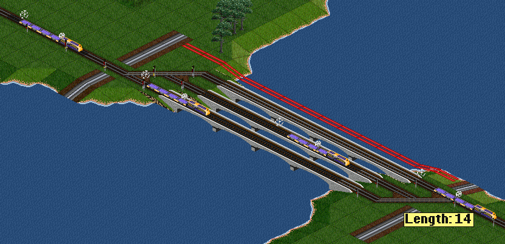

This calculates the number of parallel bridges/tunnels needed over a certain gap size to maintain full throughput. The gap is measured from the first tile of the split to, and including, the farthest signal after the gap, but before the merge. This assumes a "dragging signal distance" of 2 (signal on every other tile).
